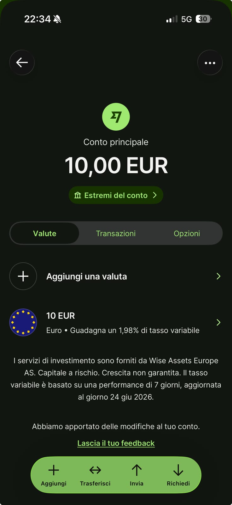

📌 In sintesi
"Interessi" è una funzione opzionale di Wise che investe il tuo saldo in fondi monetari a basso rischio tramite Wise Assets Europe AS (regolamentata in Estonia come società di investimento, non come banca). Il rendimento è variabile e legato ai tassi delle banche centrali: sul mio conto reale, l'euro mostra un tasso variabile del 1,98% (dato aggiornato al 24 giugno 2026, calcolato sulla performance degli ultimi 7 giorni). A differenza di un interesse bancario, non è coperto da alcuna garanzia sui depositi: l'app stessa lo dichiara con l'avviso "Capitale a rischio. Crescita non garantita."

Screenshot reale dal mio conto Wise: 10 EUR con tasso variabile 1,98%, e l'avviso ufficiale "Capitale a rischio. Crescita non garantita" fornito da Wise Assets Europe AS.
🔄 Aggiornamento: lo screenshot sopra è del 24 giugno 2026, il tasso è
variabile e cambia nel tempo. Al 5 agosto 2026 Wise pubblica per l'euro un tasso del
2,02% (già al netto della commissione
di gestione dello 0,26% annuo) — verifica sempre il valore aggiornato nell'app prima di
attivare la funzione.
Cos'è "Interessi" su Wise
Quando tieni denaro fermo sul conto Wise in euro, dollari o sterline, puoi attivare la funzione "Interessi", che sposta automaticamente il saldo in fondi del mercato monetario gestiti da Wise Assets Europe, l'entità del gruppo Wise autorizzata come società di investimento in Estonia.
È importante essere precisi sul linguaggio: questo non è un conto deposito bancario come quello che trovi in una banca tradizionale. È un prodotto di investimento, seppur a basso rischio, in cui il rendimento non è garantito e il capitale non è protetto da un fondo di garanzia dei depositi.
"Questa è la differenza più importante da capire tra Wise e Revolut sul fronte risparmio: il 'deposito senza vincoli' di Revolut è un interesse bancario su un conto protetto fino a 100.000€. Gli Interessi Wise sono un investimento in fondi monetari, a basso rischio ma non garantito. Non sono la stessa cosa, anche se il funzionamento quotidiano sembra simile."
Quanto rende (e quanto costa)
Il rendimento è variabile e segue l'andamento dei tassi ufficiali (BCE per l'euro, Bank of England per la sterlina, Fed per il dollaro). Per l'euro, il tasso indicativo mostrato sul mio conto reale a giugno 2026 era del 1,98% variabile (performance calcolata sugli ultimi 7 giorni, aggiornata al 24 giugno 2026), con una commissione di gestione indicativa dello 0,26% annuo sul totale investito. Il tasso pubblicato da Wise è variabile e sale/scende nel tempo: al 5 agosto 2026 risultava 2,02% (già al netto della commissione di gestione). Per sterline e dollari le commissioni pubblicate sono diverse (rispettivamente circa 0,55% e 0,28%). Questi tassi cambiano nel tempo in base alle decisioni delle banche centrali: verifica sempre il valore aggiornato nell'app prima di attivare la funzione.
Il rendimento maturato viene accreditato quotidianamente sul saldo. L'app stessa mostra l'avviso "Capitale a rischio. Crescita non garantita", a conferma che si tratta di un investimento e non di un interesse bancario.
Il capitale è garantito?
No. Trattandosi di un investimento in fondi monetari, per quanto a basso rischio, il capitale non è coperto da un fondo di garanzia dei depositi (il tipo di protezione che invece si applica ai depositi bancari tradizionali, fino a 100.000€). Il valore può in teoria oscillare, anche se i fondi monetari sono generalmente considerati tra gli strumenti a rischio più basso nel panorama degli investimenti.
Approfondisci come Wise protegge i fondi dei clienti →
Interessi Wise vs interesse su conto bancario
La differenza principale in una riga: gli Interessi Wise sono un investimento in fondi monetari con rendimento variabile e nessuna garanzia depositi; l'interesse di un conto bancario tradizionale (compreso il deposito Revolut) è invece coperto dal fondo di garanzia fino a 100.000€, con un tasso fisso per piano. Il confronto dettagliato, con numeri aggiornati su entrambi, è nella pagina dedicata: Wise vs Revolut, quale conviene →
Domande frequenti
Gli Interessi Wise sono un deposito bancario?
No, sono un investimento in fondi monetari gestito da Wise Assets Europe, non un deposito presso una banca.
Quanto rendono sull'euro?
Il tasso è variabile: sul mio conto reale a giugno 2026 era 1,98% sull'euro, con commissione di gestione indicativa dello 0,26% annuo. È salito nel frattempo: al 5 agosto 2026 il tasso pubblicato da Wise è 2,02% (già al netto della commissione). Verifica il tasso aggiornato nell'app, perché cambia nel tempo.
Il capitale è garantito?
No, non è coperto da un fondo di garanzia dei depositi. È un investimento a basso rischio, non un prodotto senza rischio.
Posso prelevare quando voglio?
Sì, il saldo investito resta generalmente disponibile, ma verifica sempre le condizioni aggiornate nell'app prima di attivare la funzione.
Altre guide Wise
- 📘 Guida introduttiva
- 🎁 Bonus e programma inviti
- 💱 Commissioni di cambio
- 💳 Carta Wise
- 🔒 Wise è sicuro?
- ❓ FAQ complete
Vuoi provare Wise?
Apri il conto gratuito e valuta se attivare gli Interessi dopo aver letto bene le condizioni nell'app.
Apri Wise oraUltimo aggiornamento: